הסבב השביעי — העיניים של הרפרנס, וטבעות שלא עולות עליו
שלוש ההערות: טבעות צמודות יותר ושלא יעלו על הדמות, בלי עפעפיים,
והעיניים לא היו קרובות לרפרנס. התיקון: אובלים כהים מלאים בלי שום לובן
מסביב, נצנוץ לבן קטן אחד בכל אחד, רחוקות, בלי עפעף ובלי גבה. זה בדיוק
מה שלטואד ולענן יש.
20 · טבעות עם מרווח
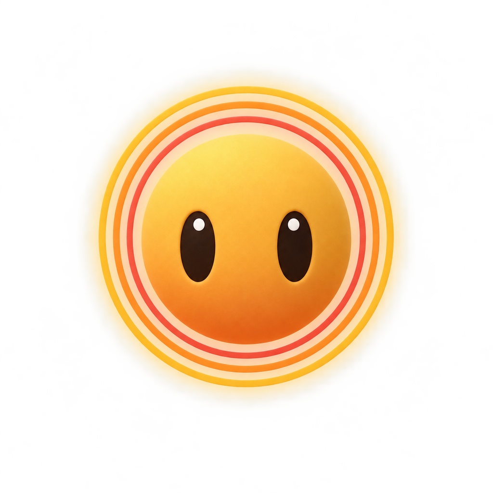
אייקון
ספלאש
כרטיס
טעינה
שלוש טבעות לגמרי מחוץ לכדור, עם אוויר ביניהן לבינו.
21 · צמודות לשפה
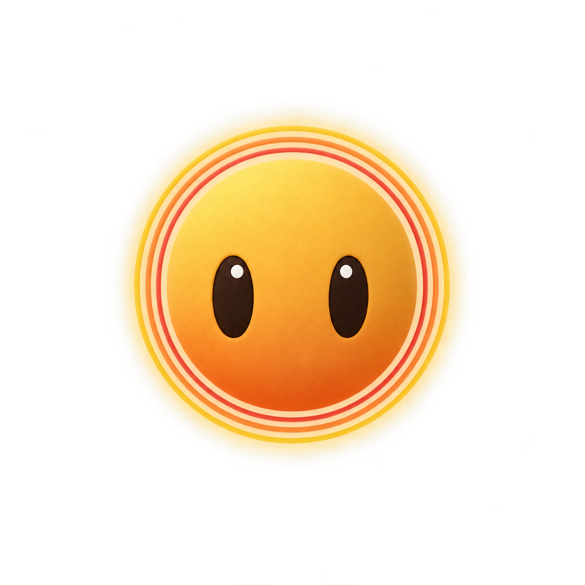
אייקון
ספלאש
כרטיס
טעינה
הכי חזקה. הטבעות נקראות כקו משולש דק סביב הצללית, והדמות נשארת הגיבור.
22 · מוטות
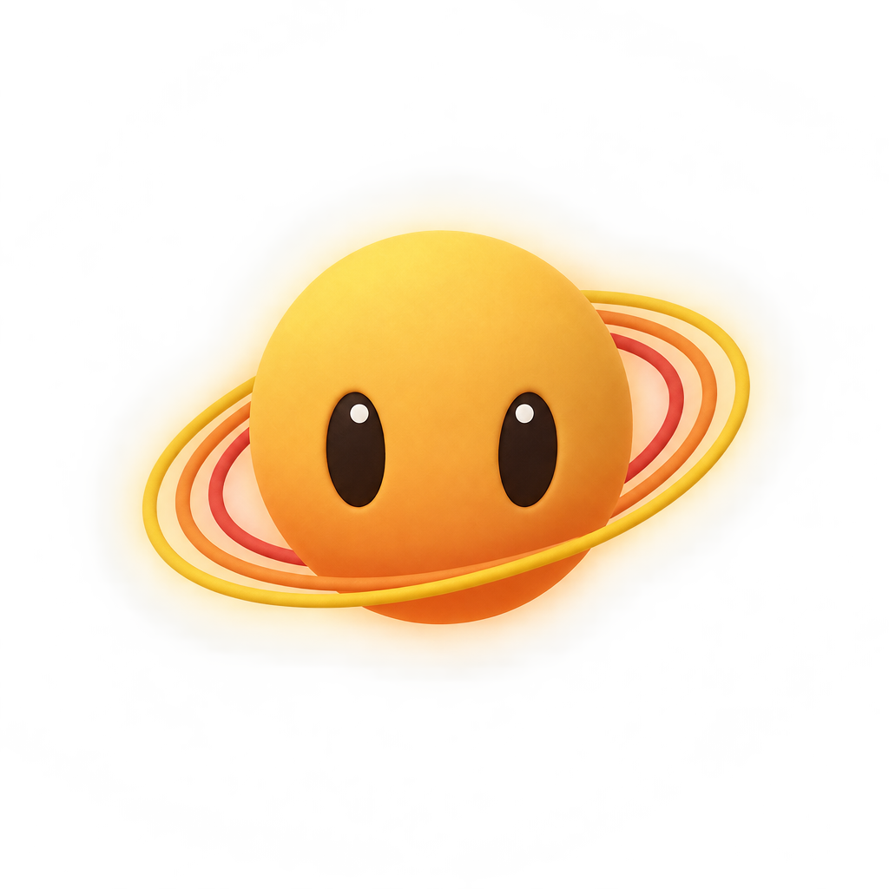
אייקון
ספלאש
כרטיס
טעינה
עוברת על הכלל שלך: הטבעת הצהובה חוצה את הכדור מלפנים למטה. וזה שוב שבתאי.
העיניים נכונות עכשיו. אובל כהה מלא, בלי לובן ובלי קשתית, נצנוץ לבן אחד,
רחוקות זו מזו, בלי עפעף — וזה אותו מנגנון בדיוק שיש בענן שבחרת ובטואד: צורה
כהה אחת עם הדגש בהיר, ולא עין מצוירת.
1.50 לשלוש, היתרה 80.15 ← 78.65. 21.50 מתוך 100.15.
הסבב השישי — עיניים של נינטנדו, ושלוש טבעות
הרפרנס: טואד. עיניים בסגנון מריו — לובן, אישון כהה, נצנוץ, ועפעף שחותך
קצת את החלק העליון — וגוון נוסף בכדור, שלוש טבעות מרחפות שלא נוגעות
בו ולא זו בזו.
17 · שלוש טבעות, מישוריות
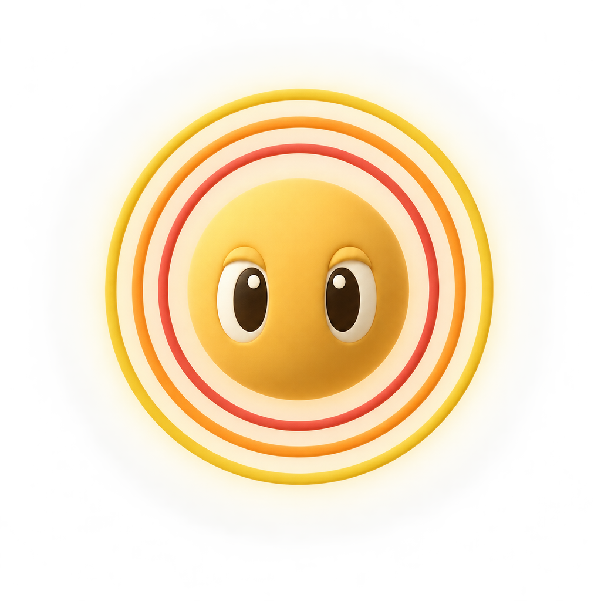
אייקון
ספלאש
כרטיס
טעינה
הטבעות צפות ולא נוגעות — וזה נקרא כמטרה. גם הכדור נדחף אחורה מאחוריהן.
18 · שלוש טבעות, מסלוליות
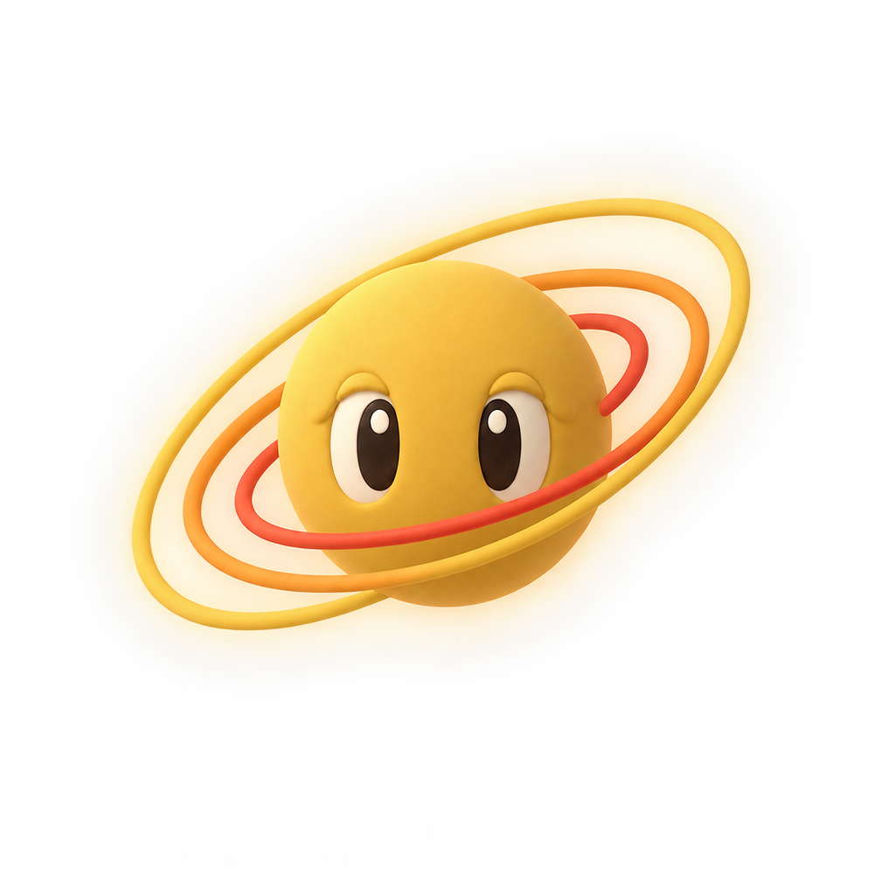
אייקון
ספלאש
כרטיס
טעינה
מקסים, וזה שבתאי ולא שמש. וההטיה הופכת אותו לא‑סימטרי, מה שרע לאייקון.
19 · בלי טבעות, גוון בגוף
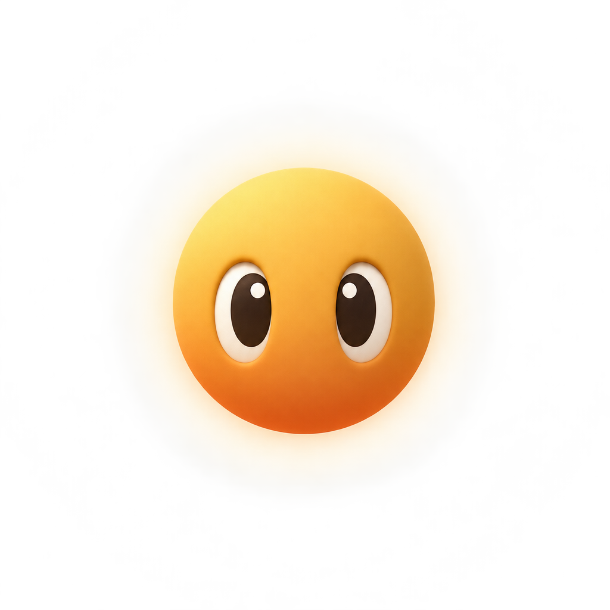
אייקון
ספלאש
כרטיס
טעינה
הכי חזקה מהשלוש. הגוף עובר מצהוב לכתום, העיניים נקראות, והוא שורד בקטן.
העיניים הן ההישג של הסבב. שלושתן קיבלו את העין של נינטנדו — וסוף סוף
הן רחוקות זו מזו, מה שסימנתי כפגם בכל שישה הסבבים הקודמים. זה מה שהפך את
הגוף לפנים. ושלוש הטבעות עובדות — אבל לא כאן. כסימן סטטי הן מטרה או כוכב לכת.
כתנועה הן בדיוק מה שחיפשנו: שלוש טבעות שמסתובבות סביבו במהירויות שונות
כשהוא חושב. וזה גם טריוויאלי ב‑SVG — שלוש אליפסות ושלוש מהירויות
סיבוב — בניגוד לכל השאר כאן. כלומר הרעיון שלך אולי לא הלוגו אלא האנימציה.
1.50 לשלוש, היתרה 81.65 ← 80.15. 20.00 מתוך 100.15.
הסבב החמישי — החומר של הכפתורים שלנו
שלוש ההערות: גוף חלק יותר, מט כמו הכפתורים באפליקציה כדי שישתלב,
ואור קצת יותר כתמתם־צהבהב. החומר נחת במלואו — אפס מרקם, הצללה בניגודיות
נמוכה, אור רחב משמאל־למעלה וצל רך מימין־למטה, בלי שום ברק. בדיוק
--nu-ground עם הצללים שלנו.
14 · אור עם כיוון
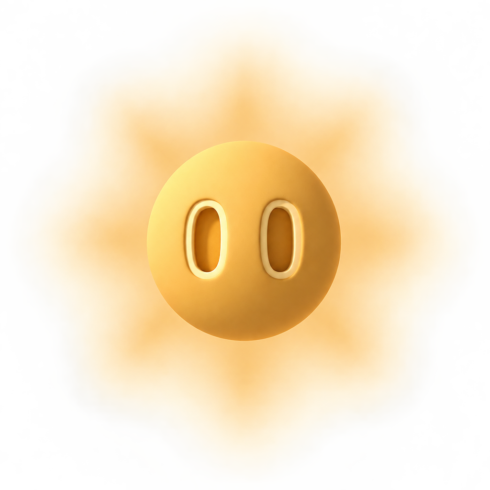
אייקון
ספלאש
כרטיס
טעינה
הגוף של הכפתורים, והאור בשמונה כיוונים. המועמדת החזקה.
15 · הילה אחידה
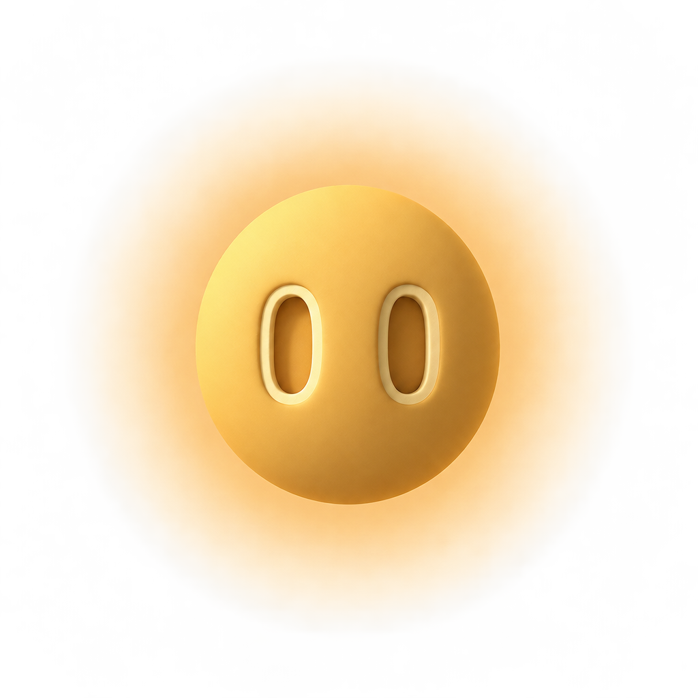
אייקון
ספלאש
כרטיס
טעינה
הכי שקטה והכי ״אובייקט״ — הגוף הכי קרוב לכפתור. והכי פחות שמש.
16 · מט עד הסוף
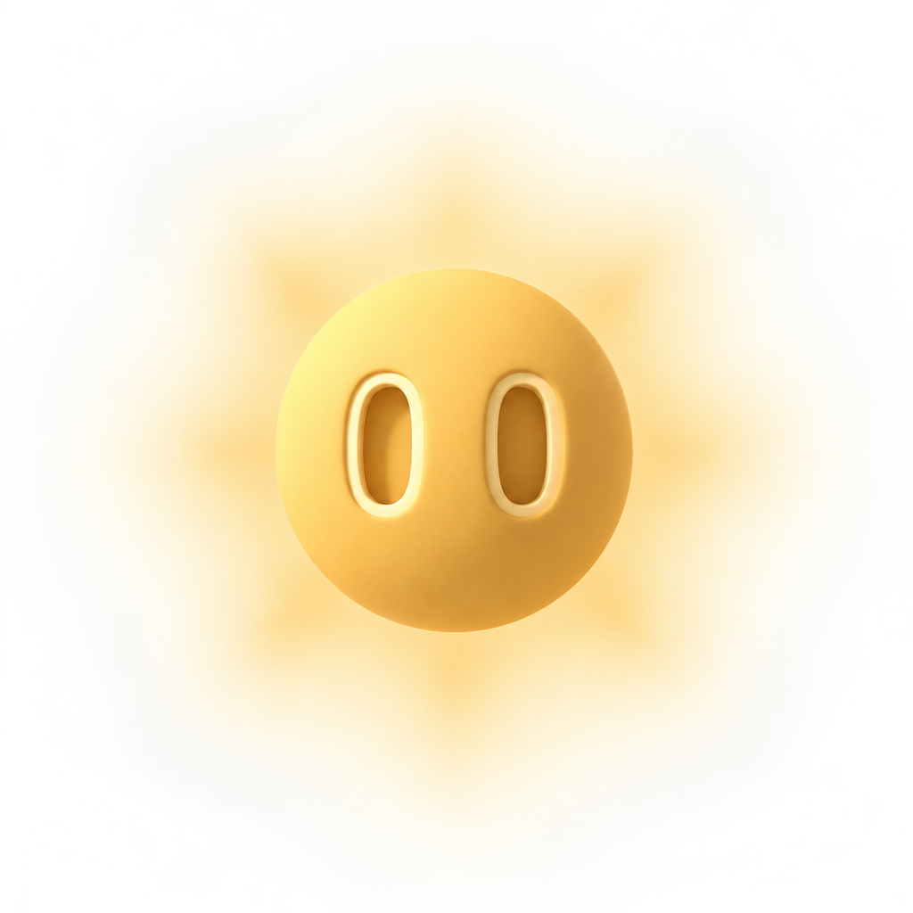
אייקון
ספלאש
כרטיס
טעינה
אותו רעיון עם הכדור קטן יותר בפריים, כך שהאור תופס יותר מקום.
מה שנחת ומה שלא. המט נחת לגמרי — שלושתן חלקות, בלי גרגר, בניגודיות
נמוכה, ואפשר להניח אותן ליד כפתור באפליקציה בלי שייראו זרות. הכתמתם רק
חלקית: האור חם וזהוב קרוב לכדור ועדיין מלבין בקצה החיצוני, אז אם
רוצים ממש כתום — זאת הערה לסבב הבא, ולא משהו שקרה כאן. 1.50 לשלוש (0.5 לתמונה ב‑quality בינוני — והפעם הרצתי בדיוק את מה
שעשיתי לו preflight). היתרה 83.15 ← 81.65. 18.50 מתוך 100.15.
הסבב הרביעי — הדמות עצמה, בלי קרניים, עם אור נעים
הפעם לא תיארתי אותה במילים — האכלתי את המודל בתמונה עצמה כרפרנס
(GPT Image, שמקבל תמונת ייחוס). הגוף,
הצבע, החומר והעיניים הם של 01 בדיוק. הקרניים ירדו, הצבע קצת יותר אחיד,
והרקע שקוף — כדי שהיא תוכל לנוע על המסך.
11 · הילה רכה
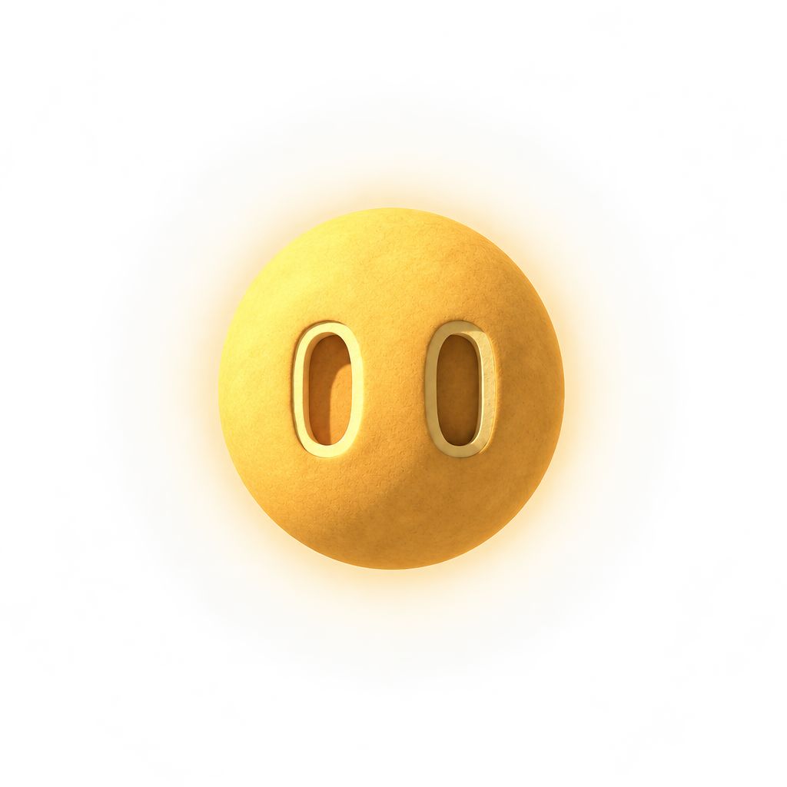
אייקון
ספלאש
כרטיס
טעינה
הילה רחבה ואחידה סביב כל הכדור.
12 · אור עם כיוון
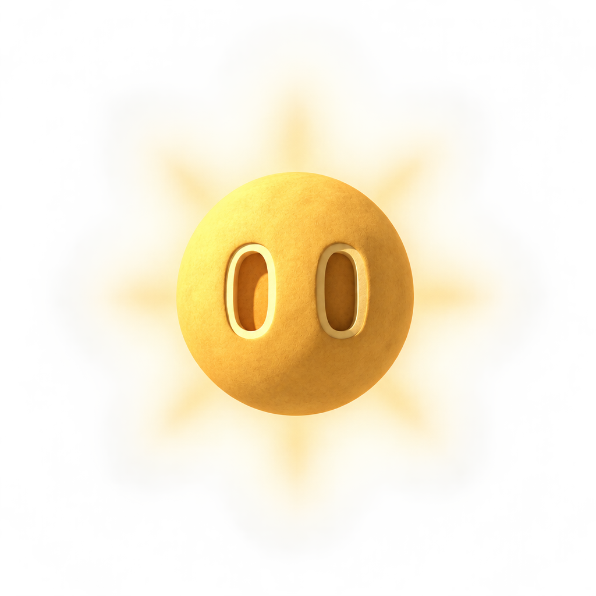
אייקון
ספלאש
כרטיס
טעינה
האור עושה את הקרניים — שמונה כיוונים, בלי שום מתאר ובלי שום גוף.
13 · נשימה על השפה
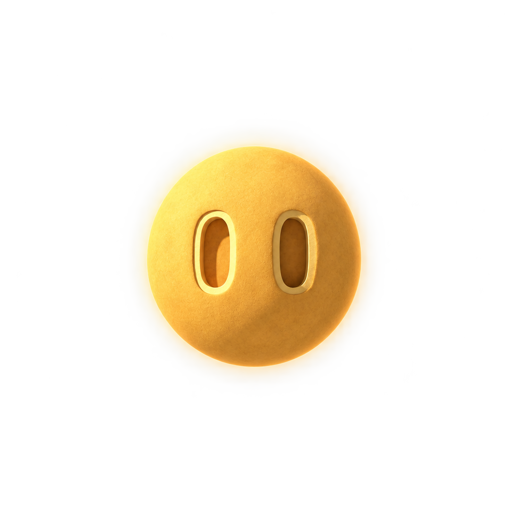
אייקון
ספלאש
כרטיס
טעינה
אור צמוד לשפת הכדור בלבד, ומעבר לו כלום.
וטעיתי לגבי הרקע, אז הנה מה שנמדד ולא מה שהנחתי. כתבתי שההילה כמעט
תיעלם על #e9e7e3 כי אור לבן־חמים לא יכול להיראות על רקע כמעט לבן.
הסתכלתי: על הרקע הבהיר האור נקרא כזהב חמים, לא כלבן, והוא ברור בשני
הרקעים. ההילה עובדת על שניהם. וטעות שנייה, שלי, בכסף: עשיתי preflight ב‑quality בינוני (0.5) והרצתי
ב‑quality גבוה. היתרה אומרת 87.65 ← 83.15, כלומר 1.50 לתמונה. preflight
של קונפיגורציה אחרת הוא לא preflight. סך הכול עד כה: 17.00 מתוך 100.15.
הסבב השלישי — כדור, והאור הוא הקרניים
בלי שום קרן מפוסלת. צהוב רווי, עיניים של 03, וארבע תשובות שונות לשאלה מה
ההילה עושה. על רקע כהה, כי הילה נקראת רק על רקע כהה ממנה — ברגע שתבחר, מריצים
את המנצחת גם על הרקע הבהיר שלנו.
07 · הילה אחידה
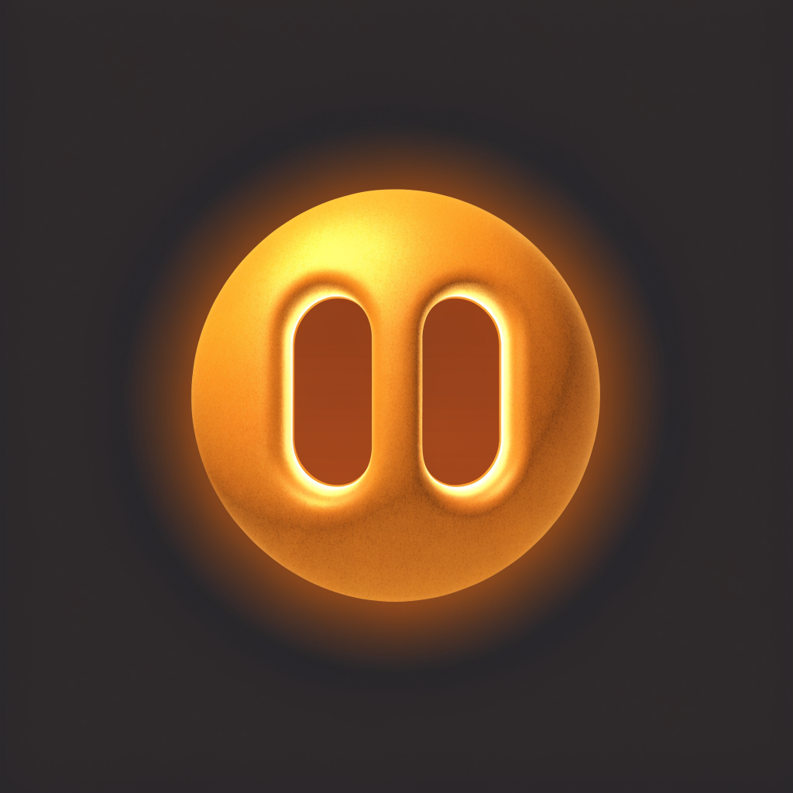
אייקון
ספלאש
כרטיס
טעינה
הכי שמיש כאווטאר — צללית ברורה, עומד בפני עצמו, והכי
קל לצייר כ‑SVG (דיסק + זוהר רדיאלי). והכי פחות שמש: הילה אחידה היא
מנורה, לא כוכב.
08 · לאור יש כיוון
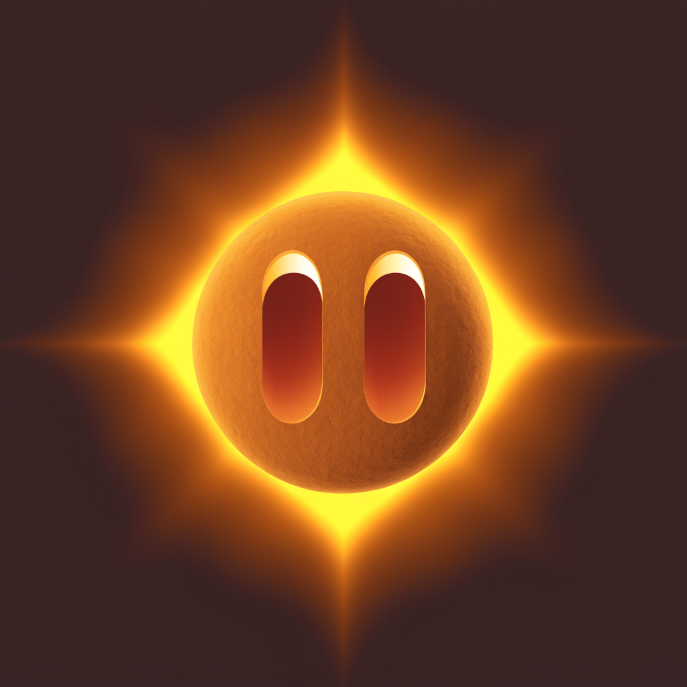
אייקון
ספלאש
כרטיס
טעינה
היחיד שבו האור באמת מחליף את הקרניים. אבל יצאו
ארבעה חודים ולא שמונה, והגוף כהה לחום.
09 · טבעת + הילה
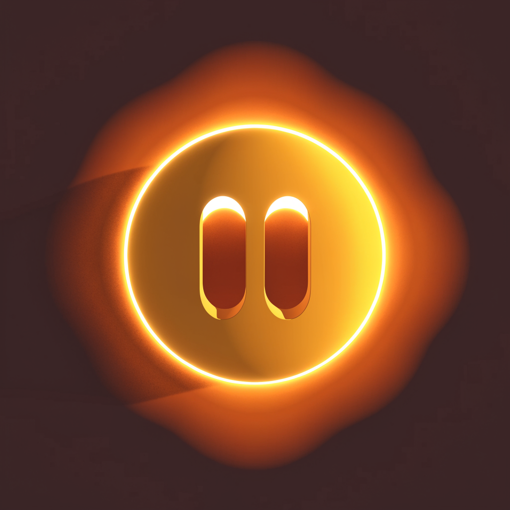
אייקון
ספלאש
כרטיס
טעינה
הטבעת הפכה למתאר ניאון — בדיוק הדבר שהפרומפט אוסר —
וההילה מסביב עננית וגושית.
10 · אלומות אור
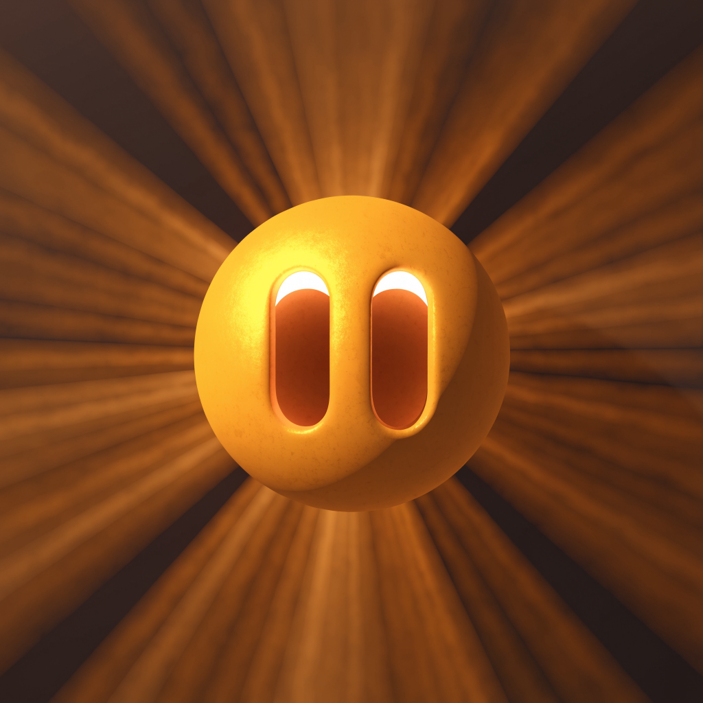
אייקון
ספלאש
כרטיס
טעינה
הכי שמש מכולן. וגם לא אווטאר — האלומות ממלאות
את כל הפריים, כלומר זה רקע ולא דמות שאפשר להזיז על המסך.
הסבב השני — פסטל, קרניים נקיות
לפי ההערה שלך: לקחת את הראשונה, צבע אחיד ופסטלי, קרניים נקיות יותר.
שלוש וריאציות מאותו פרומפט.
04 · קרניים מחטיות
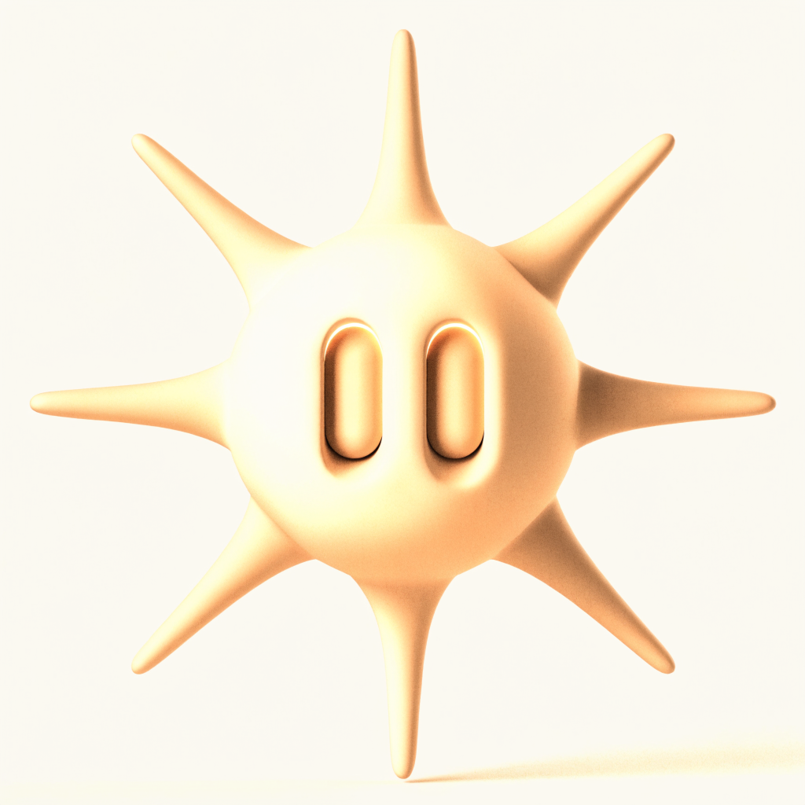
אייקון
ספלאש
כרטיס
טעינה
״נקי״ יצא כאן חד. הקרניים דקות כמחטים והצללית נקראת
כנגיף ולא כשמש. והעיניים כמעט שחורות.
05 · הטובה מהשלוש
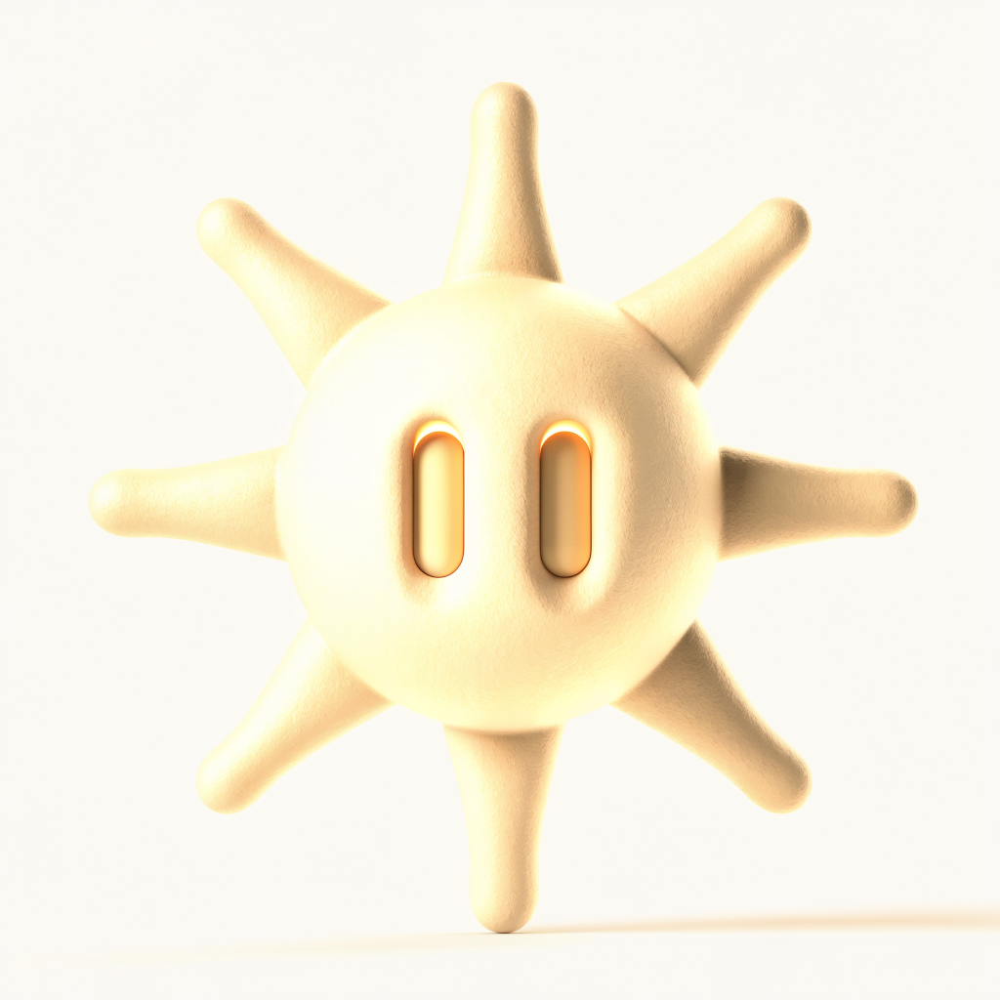
אייקון
ספלאש
כרטיס
טעינה
שמונה קרניים מתחדדות, נקיות ומרווחות היטב, והאור היחיד
בכל הדמות הוא בתוך העיניים — וזה בדיוק ״חומר אחד, והצבע היחיד הוא
אור״. אבל הגוף כבר לא ענבר, הוא שמנת.
06 · גוף גדול, קרניים קצרות
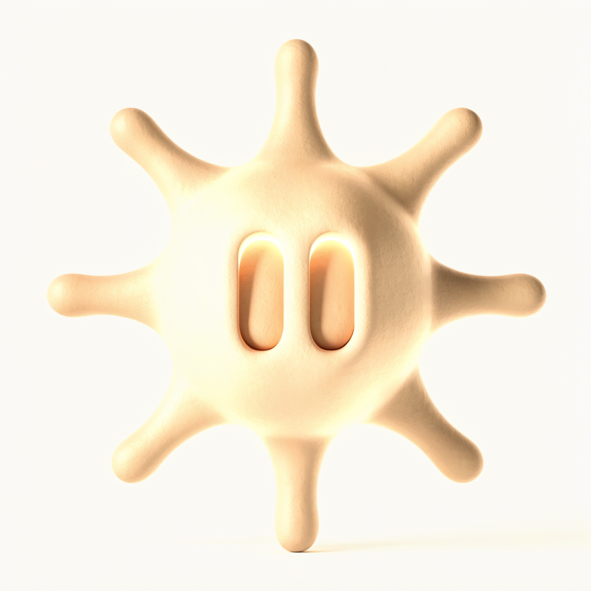
אייקון
ספלאש
כרטיס
טעינה
הכי רך מהשלוש והכי חלש בקטן — קרניים קצרות על גוף
גדול נבלעות, והאייקון נקרא כעיגול. וחזר קצת מהגרעיניות.
הסבב הראשון, לתיעוד
01 היא זאת שאמרת שהתחברת אליה — ושהיא נראית מלוכלכת. 02 ו‑03 היו הניסיון
לדחוף לכיוון סימן, ודחית אותו.
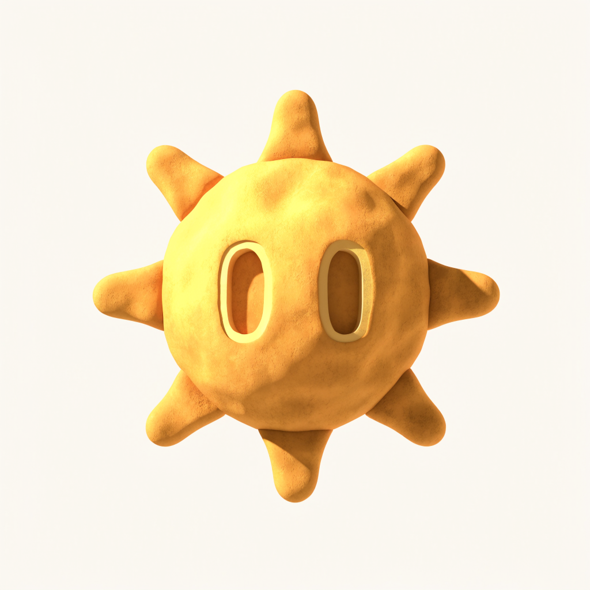
01 — הדמות. חיה,
ומנומשת.
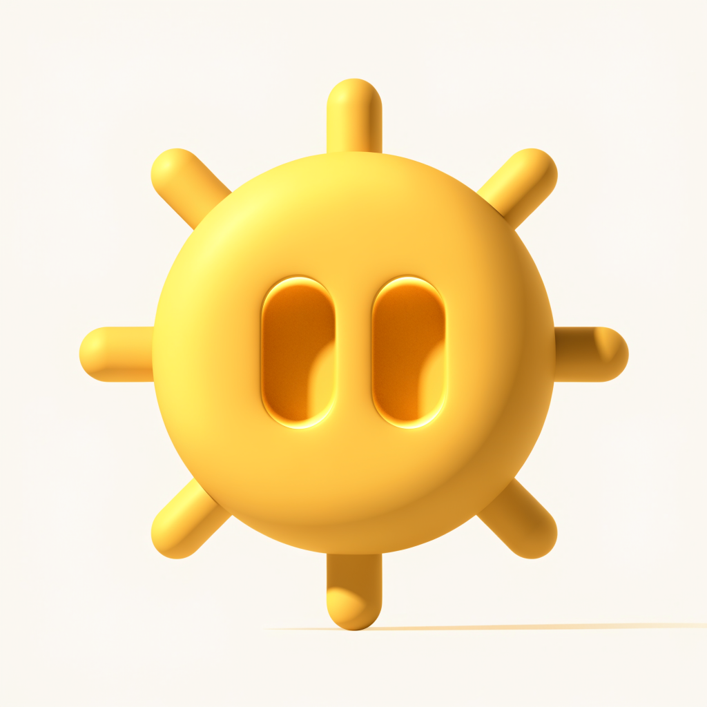
02 — דיסק נקי.
עיניים כ‑Pause.
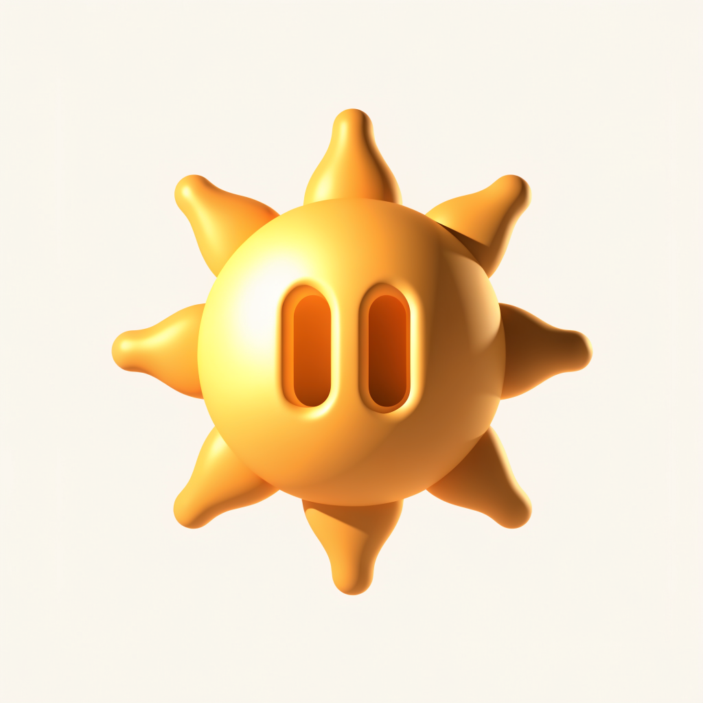
03 — 01 בניקיון של
02.
ושני הפגמים שחוצים את כל השש
העיניים קרובות מדי. ברפרנס שבחרת הן רחוקות זו מזו, וזה רוב מה שגורם
לגוף להיקרא כפנים ולא כשני חריצים — ב‑22px זה ההבדל בין דמות לכפתור Pause.
והפסטל עבר את הפסטל והגיע לשמנת: ב‑04, 05 ו‑06 הגוף כמעט לא ענבר, כלומר
השמש איבדה את הצבע היחיד שהאפליקציה כולה בנויה סביבו. שתי ההערות האלה הן
הסבב הבא, לא משנה מי מנצחת.